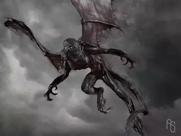
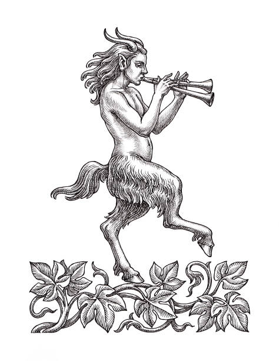

Mitologia Romana
Deuses, heróis e tradições da Antiga Roma
A Origem do Mundo
Antes de tudo existir, os romanos acreditavam que havia apenas o Caos, um estado de desordem primordial. Com o tempo, dessa massa desorganizada surgiram as primeiras divindades primordiais:
Divindades Primordiais
- Tellus (Terra) – Deusa da terra fértil
- Caelus (Céu) – Deus do firmamento
- Nox (Noite) – A escuridão silenciosa
- Dies (Dia) – A luz do amanhecer
- Chaos (Caos) – O vazio original
Saturno e a Idade de Ouro
A primeira fase da história divina romana foi marcada pelo reinado de Saturno, o deus do tempo. Sob seu governo, os humanos viviam em harmonia, sem precisar trabalhar, guerrear ou sofrer. Essa era foi chamada de Idade de Ouro.
As Saturnálias
Após ser destronado por seu filho Júpiter, Saturno fugiu para a região do Lácio, na Itália. Lá, ele ensinou a agricultura e trouxe civilização ao povo. Em sua honra, nasceu o festival das Saturnálias, celebrado com festas, comida, troca de presentes e até a inversão de papéis sociais.
A Nova Ordem: Júpiter, Netuno e Plutão
Com a queda de Saturno, seus filhos tomaram o controle do universo:
Os Três Irmãos
- Júpiter (Zeus) – Tornou-se o rei dos céus e dos deuses
- Netuno (Poseidon) – Recebeu o domínio dos mares
- Plutão (Hades) – Ficou com o mundo subterrâneo e os mortos
Juntos, eles estabeleceram uma nova era, com leis e hierarquias celestes.
A Fundação de Roma e Enéias
Diferente dos gregos, os romanos conectaram a criação do mundo à origem de sua cidade. Segundo a Eneida, poema épico de Virgílio:
- O herói troiano Enéias escapou da destruição de Troia
- Foi guiado pelos deuses até a península Itálica
- Seu filho, lulo, deu origem à linhagem dos reis de Alba Longa
- Eventualmente, nasceram Rômulo e Remo, os fundadores lendários de Roma
Deuses Principais da Mitologia Romana
A mitologia romana absorveu muitos dos deuses gregos, adaptando seus nomes e características ao contexto cultural de Roma. Os deuses romanos tinham uma personalidade mais rígida, voltada ao dever, ao poder do Estado e à moral.
JÚPITER – Rei dos Deuses e Senhor dos Céus
- Domínio: Céu, trovões, justiça, autoridade
- Símbolos: Raio, águia, cetro, trono
Júpiter é o deus supremo do panteão romano. Representa o poder do império, a ordem e a lei. Mais austero que Zeus, era associado diretamente ao poder do Estado.
JUNO – Deusa do Casamento e Protetora das Mulheres
- Domínio: Casamento, maternidade, rainha dos deuses
- Símbolos: Pavão, coroa, romã
Esposa de Júpiter e sua contraparte feminina. Protetora das mulheres romanas, especialmente das esposas, era reverenciada em cerimônias nupciais.
NETUNO – Deus dos Mares
- Domínio: Oceanos, terremotos, cavalos
- Símbolos: Tridente, golfinho, cavalo
Governa os mares e todas as águas. Era invocado pelos navegadores e temido por sua fúria. Tinha forte ligação com os cavalos.
MINERVA – Deusa da Sabedoria e das Estratégias
- Domínio: Sabedoria, estratégia, artes, guerra racional
- Símbolos: Coruja, escudo, lança
Padroeira dos artesãos, estudiosos e engenheiros. Embora seja uma deusa guerreira, valoriza a tática mais do que a força bruta.
VÊNUS – Deusa do Amor e da Beleza
- Domínio: Amor, sedução, fertilidade, desejo
- Símbolos: Rosa, concha, pomba
Considerada a ancestral do povo romano (mãe de Enéias), simboliza o charme, a feminilidade e a força da sedução.
MARTE – Deus da Guerra
- Domínio: Guerra, força militar
- Símbolos: Lança, escudo, capacete
Mais respeitado que seu equivalente grego Ares, Marte era visto como protetor de Roma e pai de Rômulo e Remo.
Criaturas da Mitologia Romana
Embora a mitologia romana tenha muitas criaturas emprestadas dos mitos gregos, os romanos também desenvolveram suas próprias versões e crenças sobre seres fantásticos.
Fúrias (Furiae ou Dirae)
- Natureza: Espíritos femininos vingativos
- Função: Castigar crimes graves
São três entidades: Alecto, Tisifone e Megera. Perseguiam sem descanso os culpados, atormentando-os com loucura e culpa.
Lupa Capitolina – A Loba de Roma

- Natureza: Animal sagrado
- Função: Amamentar os fundadores de Roma
A Loba que amamentou os gêmeos Rômulo e Remo tornou-se um símbolo sagrado de Roma, representando proteção e força.
Faunos
- Natureza: Metade homem, metade bode
- Função: Guardiões da natureza
Inspirados nos Sátiros gregos, eram mais suaves e menos lascivos. Viviam nas florestas e eram ligados ao deus Fauno.
Manes e Lares
- Natureza: Espíritos dos mortos
- Função: Proteger a família e a casa
Os Manes eram os mortos honrados e reverenciados. Os Lares protegiam o lar e eram cultuados em altares domésticos.
Fatos Curiosos
A Mitologia era Parte da Religião do Estado
Os mitos romanos não eram apenas contos populares — eram parte oficial da religião romana. O culto aos deuses estava intimamente ligado ao governo.
Deuses "Menores" para Tudo
Existiam dezenas de deuses menores para funções específicas:
- Cardea – protegia dobradiças de portas
- Cloacina – deusa dos esgotos
- Terminus – deus dos marcos de terra
Os Deuses Apoiavam a Expansão do Império
Conquistar novos povos era visto como vontade dos deuses. Roma integrava os deuses locais ao seu panteão, garantindo a paz religiosa.
Os 12 Deuses Maiores (Dii Consentes)
| Nome Romano | Domínio | Equivalente Grego |
|---|---|---|
| Júpiter | Céu, trovões, rei dos deuses | Zeus |
| Juno | Casamento, rainha dos deuses | Hera |
| Netuno | Mares e terremotos | Poseidon |
| Minerva | Sabedoria, estratégia, artes | Atena |
| Marte | Guerra e força militar | Ares |
| Vênus | Amor, beleza, fertilidade | Afrodite |
| Apolo | Sol, música, oráculos, cura | Apolo (mesmo nome) |
| Diana | Caça, lua, natureza selvagem | Ártemis |
| Mercúrio | Comércio, mensagens, transições | Hermes |
| Ceres | Agricultura, colheitas | Deméter |
| Vulcano | Fogo, forjas, metalurgia | Hefesto |
| Baco | Vinho, festas, êxtase, teatro | Dionísio |
Deuses Domésticos e Familiares
| Nome | Função |
|---|---|
| Lares | Espíritos protetores do lar |
| Penates | Protetores dos alimentos e da despensa |
| Manes | Espíritos dos ancestrais falecidos |
| Vesta | Deusa do fogo sagrado do lar |
Deuses da Natureza e Fertilidade
| Nome | Função |
|---|---|
| Fauno | Deus dos campos e da fertilidade |
| Flora | Deusa das flores e primavera |
| Pomona | Deusa das frutas e jardins |
| Silvano | Guardião das florestas e bosques |